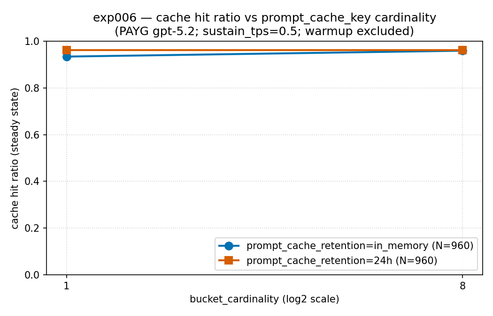

実験ノート · exp006 · prompt_cache_key バケット分割測定 · 文書上の‘バケットあたり約 15 req/min の目安’は実運用でどう現れるのか
exp006 — キャッシュキーを細かく分けても、キャッシュはほぼそのままでした
執筆 Hyeonsang Jeon · Global Black Belt, Cloud & AI Apps
Azure のプロンプトキャッシュは、リクエスト群が同じ先頭部分(プレフィックス)を共有すると、その部分を安く再利用してくれます。ただし文書には一つ注意書きがあります。一つのキャッシュキーへリクエストを寄せすぎると、(プレフィックスハッシュ, キャッシュキー)あたり約 15 req/minを目安に追加のマシンへルーティングされ、キャッシュ効率が下がる可能性があります。そこでよくある処方が、キャッシュキーを複数に分けること(prompt_cache_key バケットを増やすこと)です。このノートは、一つのライブ gpt-5.2 PAYG デプロイで、その処方が本当にキャッシュを守るのかを測ります。
自然な予測はこうでした — キーを一つだけ使えば(カーディナリティ 1)文書の目安を越えてキャッシュ効率が下がり、8個に分ければ(カーディナリティ 8)各バケットのトラフィックが薄まって目安を下回るため、キャッシュヒットは目に見えて戻るはずでした。事前に決めた読みは二つです。1→8でヒットが大きく上がればバケット分割は有効な手段であり、ほとんど上がらなければその目安はこのデプロイでは厳密なしきい値ではない、と判断します。
実測は後者を支持しました。キー一つへ分あたり 30リクエスト(文書の目安の 2倍)を寄せても、定常状態キャッシュヒットは in_memory 93.34%, 24h 96.12% で持ちこたえ、8個へ分けても +2.52%p(in_memory)・−0.00%p(24h) しか変わりませんでした。文書の約 15 req/min は厳密なしきい値ではなく、このデプロイでは2倍に達しても影響は限定的でした。より大きな差が観測された軸は保持モードでした — 同じ速度で 24h 保持は、カーディナリティ 1 の尾部レイテンシ(TTFT p95)が in_memory の約 106秒に対して約 10秒でした。このノートでは、その実測を設計 → 入力 → 予測対実測 → 曲線 → 判断としてたどります。
なぜ読むのか
キャッシュキーを何個に分けるか、文書だけで決める前に
プロンプトキャッシュは先頭部分が同じリクエストを安く処理します。そのため、長いシステムプロンプトを前に置くと、その後ろのリクエスト群をキャッシュ料金で処理できます。問題は一つのキーへ集中するときです。文書は、(プレフィックスハッシュ, キャッシュキー)一つあたり約 15 req/min を目安に追加のマシンへルーティングされ、キャッシュ効率が下がる可能性があるため、prompt_cache_key を複数に分けてトラフィックを分散するよう案内しています。
しかし、分けることにもトレードオフがあります。キーを 8個に分ければ、バケット一つが受ける速度は 8分の1に下がり、各バケットが温まりにくくなる可能性があります。目安を超える集中を避ける利点と、バケットを分ける影響のどちらが大きいかは、文書だけでは判断できません。実測が必要です。
prompt_cache_key でトラフィックを何方向へ分けるか悩んでいるなら、このノートが参考になります。“文書の目安を参考にキーを細かく分ければキャッシュヒットは守られるのか、それとも分割の影響が上回るのか?” という問いに、この実験はライブデプロイからの実測結果を示します。少なくともこの規模では、文書の目安だけを見て急いで分ける理由は大きくありませんでした。
まず、10秒
結論を信じず、数字から自分で出してください
トークン消費は 0 です。最初の二行は二つの保持モードの入力·変数·成果物カードをそのまま出力し、最後の一行は公開済み集計 CSV からカーディナリティ 1→8 のキャッシュヒットを再計算して、このノートと照合します(ネットワークも資格情報も不要です)。
# 二つの保持モード(in_memory ・ 24h)の入力 → 変数 → 成果物カードを出力 (ネットワークなし)
python3 -c "import experiments; print(experiments.describe('exp006_cache_key_bucketing_inmemory.yaml').summary())"
python3 -c "import experiments; print(experiments.describe('exp006_cache_key_bucketing_24h.yaml').summary())"
# 公開済み集計 CSV からカーディナリティ 1→8 のキャッシュヒットをもう一度出し、ノートと照合 (トークン 0)
python3 -c "import csv; r=list(csv.DictReader(open('results/cache-key-bucketing/cache_hit_ratio_vs_cardinality.csv'))); d={(x['retention'],x['cardinality']):x for x in r}; [print('%-9s card1=%.4f%% (%.1f RPM/bucket) card8=%.4f%% (%.1f RPM/bucket) gap=%+.4f pp' % (ret, float(d[(ret,'1')]['cache_hit_ratio'])*100, float(d[(ret,'1')]['realized_admitted_per_bucket_rpm']), float(d[(ret,'8')]['cache_hit_ratio'])*100, float(d[(ret,'8')]['realized_admitted_per_bucket_rpm']), (float(d[(ret,'8')]['cache_hit_ratio'])-float(d[(ret,'1')]['cache_hit_ratio']))*100)) for ret in ('in_memory','24h')]"実際のライブ負荷を再現するには Azure 資格情報と実課金が必要です — これは本物のライブデプロイへリクエストを送る負荷テストです。資格情報なしでたどる道(公開済みの生サマリ JSON から曲線·CSV を再導出する手順)は、benchmarks/06-cache-key-bucketing/analysis.md のチャート再現節と scripts/plot_cache_key_bucketing.py に整理されています。
設計
今回はキャッシュキーを何個に分けるかだけを変える
なぜこれを測ったのか。 文書では、一つのキャッシュキーが約 15 req/min を超えると追加のマシンへルーティングされ、キャッシュ効率が下がる可能性があるため、キーを複数に分けてトラフィックを分散するよう案内しています。ただし、分けると各バケットが温まりにくくなる可能性もあります。そのため、分散による利点と影響のどちらが大きいかは文書だけでは分かりません。この実験では、その差をライブデプロイで測定します。
そこで、判定基準を‘差の大きさ’に置きました。 事前に決めた読みは二つです — カーディナリティ 1→8 でキャッシュヒットがはっきり上がれば、バケット分割は有効な容量管理策です。ほとんど動かなければ、文書の目安はこのデプロイではポリシー選択より小さい要因です。 どちらの場合も実測で判定します。さらに、24h 保持と in_memory 既定値で結果の形が変わるかも確認しました。
文書の目安を超える負荷を実現するため、まずテストハーネスを修正しました。 この実験は二度の無効な試行を経ており、その記録は隠しません。最初はリクエストを一列に(直列で)送っていたため、実到達速度が分あたり約 7リクエストまで落ち、文書の目安(約 15 req/min)に届きませんでした。次は同時処理上限を低く設定しすぎ、送るべきリクエストがディスパッチャの待ち行列へたまり、事前登録済みのバックログゲートが正しく実験を停止しました。どちらの回も根拠から隔離し、最後の回でようやく待ち行列上限を十分に上げて(ライブ応答が遅くても詰まらないようにして)、計画した 30 RPM を実現しました。以下の数値はその最後の回のものです。
なぜライブ単一デプロイなのか。 これはシミュレーションでも、PTU(予約容量)の根拠でもありません。各リクエストを実際の Azure gpt-5.2 デプロイ(500,000 TPM)へ送る PAYG(使った分だけ課金)測定です。文書が示す約 15 RPM の目安は PAYG モデルのものなので、その環境で測定しました。負荷は effort=low、システムプロンプトは約 9.5K トークン(二つの保持モードがバイトまで同じプロンプトを受け取るよう SHA-256 329a94…2a99 で固定、corpus_seed 4242)、max_output_tokens=512。0.5/sec で一定に流し、ウォームアップを除いた定常状態区間を代表にしています。
変える軸は二つだけです。 sweep.bucket_cardinality を {1, 8} に、prompt_cache_retention を {in_memory, 24h} に変えます。プロンプト·負荷·モデル·推論強度·デプロイ上限はすべて固定なので、成果物の差はこの二軸だけに起因します。保持モードごとに 480リクエスト × 2セル を実行しました。
問いは一つです。 トラフィックを複数のキャッシュキーへ分け、文書の目安よりバケットあたりの流量を下げると、キャッシュヒットをより維持できるのでしょうか。
事前登録予測
バケットを分ければキャッシュが戻る。事前に決めた判定線は1→8 のキャッシュヒット差の大きさです。はっきり上がればバケット分割は有効な手段であり、ほとんど動かなければ上限はこのデプロイでは小さな要因だと判断します。
この実験の役割
文書が示したキャッシュキー上限が実際にどれほど固いかを、ライブ PAYG デプロイで初めて信頼できる形で測る基準線。カーディナリティと保持ポリシーがキャッシュ·レイテンシに本当に刻まれるかを確認する。
入力と成果物
何を入力し、何を成果物として残したか
この実験が使ったものも残したものも、手書きの要約ではなくリポジトリの実ファイルです。だから入力から出力まで、一行でたどれます。
入力
実験定義: experiments/exp006_cache_key_bucketing_inmemory.yaml, …_24h.yaml (prompt_cache_retentionだけが異なる)。
コーパス: system_prompt_corpus.json(約 9.5K トークン) · user_prompts.json。
固定: 二つの実行のシステムプロンプトを SHA-256(329a94…2a99)で固定 — 二つの保持モードがバイトまで同じプロンプトを受け取ったことを保証する。
成果物
生の呼び出し: runs/*.jsonl (+ セルごとの *.summary.json, admitted 時刻テレメトリを含む)。
集計: analysis.md。
曲線: results/cache-key-bucketing/*.png·.csv (カーディナリティ別キャッシュヒット、TTFT p95)。
保持モードごとに 480リクエスト × 2セルを最後まで実行しました(カーディナリティ 1・8 が各一セル)。ウォームアップを除いた定常状態標本はセルごとに約 388–390件です。根拠実行では1,920 sends のうち失敗は 1件 — 上流が一瞬だけ 500 を返したもので、セル隔離が残りを守り、集計は崩れていない。実際の 429(レート制限)は 0件、ディスパッチャの待ち行列が詰まったセルも 0件(四セルすべて backlog_excessive=false)。削除した行はない — 何をなぜ残したかは下の 透明性で説明します。
予測対実測
事前登録した予測は‘分ければ改善する’でした — 実測はほとんど変わりませんでした
何を予測したか
キー一つへ寄せると文書の目安を越えてキャッシュ効率が下がり、8個に分けると目安を下回るため、キャッシュヒットは目に見えて上がると予測しました。少なくとも 1→8 ではっきりした段差が見えるはずの場所でした。
何が出たか
定常状態キャッシュヒットはカーディナリティ 1→8 で in_memory 93.34% → 95.86%(+2.52%p)、24h 96.12% → 96.12%(−0.00%p)。キー一つがすでに分あたり30リクエスト(文書の目安の 2倍)を受けても持ちこたえた。
判定: バケット分割はこのデプロイでは効果の小さい施策でした。 事前に決めた二つの読みのうち、実測は‘差はほとんどありません’を支持しました。文書の約 15 RPM は厳密なしきい値ではなく、この PAYG デプロイでは 2倍に達してもキャッシュヒットへの影響は限定的でした。少なくともこの規模では、目安を超えたことだけを理由に急いで分ける必要はありません。
第一の合図
分けてもキャッシュはほぼそのままでした
下の表は定常状態(ウォームアップ除外)の区間です — 負荷が秒あたり 0.5リクエストに落ち着き、予測を検証する区間です。数値は公開済み集計 analysis.md と results/cache-key-bucketing/*.csv から再掲しています。
保持モード カーディナリティ バケットあたりRPM 定常キャッシュヒット TTFT p95 備考
in_memory 1 (一つのキー) 30.65 93.34% 106,390ms 一つのキーへ集中 ・ 文書の目安の約 2倍
in_memory 8 (分割) 4.00 95.86% 16,624ms +2.52%p (ほとんど上がらず)
24h 1 (一つのキー) 30.73 96.12% 9,900ms 24h 保持 ・ 尾部レイテンシが 10倍短い
24h 8 (分割) 4.00 96.12% 15,549ms −0.00%p (変化なし)四つの点はすべて 93–96% 帯の中に密集しています。グラフにすると、カーディナリティ 1 から 8 へ向かう線はほぼ水平です — 文書の目安を参考にトラフィックを 8分の1へ分散しても、キャッシュヒットの利得は in_memory で 2.52%p、24h では事実上 0でした。カーディナリティ 1 では、一つのキーがすでに分あたり30リクエスト(30.65 / 30.73)、文書の目安の約2倍を受けていました。それでもキャッシュヒットは 93.34% / 96.12% を維持しました。
目に見えて分かれたのは別の軸、保持ポリシーでした。 同じ 30 RPM のカーディナリティ 1 で、尾部レイテンシ(TTFT p95)は in_memory が 106,390ms、24h は 9,900ms — ほぼ10倍の差です。キャッシュヒットは似ていたが、応答が最初に出るまでの尾は保持モードが完全に分けた。
bucket_cardinality(log2)、縦軸は定常状態キャッシュヒット率です。二つの線(in_memory・24h)はいずれもカーディナリティ 1 から 8 へ進んでもほぼ水平です — キー一つが文書の目安の約 2倍(分あたり 30リクエスト)を受けても 93–96% を保ち、8個に分けた利得は in_memory +2.52%p、24h −0.00%p にとどまりました。各点は定常状態 480リクエストからウォームアップを除いた標本(N=960/保持)です。出典: results/cache-key-bucketing/cache_hit_ratio_vs_cardinality.png.
第二の合図
なぜ影響が小さかったのか — キー一つでも十分熱かった
この結果と整合する一つの説明は、一つのキーに十分なトラフィックが集まっていた可能性です。カーディナリティ 1 では、すべてのトラフィックが一つの共通プレフィックスへ送られます。分あたり 30リクエストは文書の目安の約 2倍ですが、リクエスト間隔が短く、キャッシュが温まり続けた可能性があります。ここで 8個に分けると、バケットあたりの速度は分あたり4リクエストへ下がります。目安は下回りますが、同時に各バケットが温まりにくくなる可能性もあります。この実測は純効果が in_memory 2.52%p、24h 0 だったことを示しますが、原因を切り分けたものではありません。
より大きな差が対応していたのは保持モードでした。 カーディナリティ 1 では、24h 保持の尾部レイテンシ(TTFT p95)が 9,900ms、in_memory が 106,390ms でした。より長い保持期間が再計算を減らした可能性と整合しますが、この実験は保持モード以外の要因を切り分けて因果関係を実証したものではありません。キャッシュヒット率が似ていても、レイテンシの裾は大きく異なりました。
費用差は小さいままでした。 根拠実行の費用は in_memory $4.997211、24h $4.848757 でどちらも似ており(合計で約 $9.85)、カーディナリティ間のキャッシュヒット差が小さすぎて、ドルに残るほど入力トークンを定価へ押し戻しませんでした。待ち行列が詰まったセルはなく(四セル backlog_excessive=false)、同時処理量は最大33までしか上がらず上限 96 には遠かった — つまりこの数字はテストハーネスが詰まって出たのではなく、計画した速度が本当に実現した上で出たものです。
まとめると: 文書の約 15 req/min は厳密なしきい値ではなく、このライブ PAYG デプロイでは約 2倍に達してもキャッシュヒットへの影響は限定的でした。キャッシュキーを細かく分ける施策の効果は小さく、より大きな差が観測されたのは保持モードです。尾部レイテンシを抑える方針を決める際は、カーディナリティだけでなく保持期間も実測してください。
透明性
数値に残る不規則なデータもそのまま示します
どんな測定も完全にきれいではありません。この実験が残した跡を、消さずにそのまま書いておく — 隠すと次の人が同じ場所でつまずくためです。
- 削除した行 0件。 根拠実行 1,920 sends のうち失敗は1件だけです(in_memory カーディナリティ 1)。上流が一瞬だけ
500を返したもので、スクリプトのリクエストごとの失敗隔離が残りのセルを守りました。そのセルも待ち行列ゲート(backlog_excessive=false)と同時処理上限(33 < 96)を通過したため、原資料のまま集計に残しました。 - 無効な二回の試行は根拠から隔離しました。 これ以前に、この実験は二度、テストハーネスのために失敗しました — 最初はリクエストを直列で送り、到達速度が文書の目安に届きませんでした。次は同時処理上限が低すぎ、送るべきリクエストがディスパッチャの待ち行列にたまり、事前登録済みのバックログゲートが実験を停止しました。どちらも別フォルダへ隔離し、根拠として使わない印を付けました。上の数値はその問題を修正した最後の回のものです。
- 見出しは定常状態です。 ウォームアップの過渡期を混ぜると、キャッシュが温まる序盤がポリシー効果をぼかすため、ウォームアップを除いた定常状態区間(セルあたり約 388–390件)を代表値にしました。
- 今回はレート制限は発生しませんでした。 デプロイには十分な 500,000 TPM を置き、負荷はその中(計算上 ~330K TPM)に収まったため、実際の 429 は四セルすべてで0件です。このノートでいう上限は‘レート制限’ではなく、キャッシュ上限の話です。
限界
どこまで信じられるか
この結果は、一つのデプロイ、一つの容量等級、二つのカーディナリティ、一つの負荷プロファイル、一回の実行から出た値です。数字そのものより、方法と向きを持ち帰るほうが安全です。
- PAYG であり PTU ではありません。 文書が示す約 15 RPM の目安は PAYG(使った分だけ課金)モデルのものです。PTU(予約容量)は受付の仕組みが違うため、この結果を PTU の根拠へ移してはいけません。この実験は PTU を測定していません。
- 単一デプロイです。 二つのデプロイ比較も、スピルオーバールーティングもありません。キャッシュキーカーディナリティという一つの調整軸だけをライブで検証します。
- 絶対値は移植できない。 キャッシュヒットとレイテンシはテナント·リージョン·時間帯で変動します。Azure デプロイ負荷は時刻に左右されるため、カーディナリティ間の差の向きを読むべきです。
- 尾部レイテンシの変動は大きくなりました。 ライブデプロイの TTFT 分布が実行中に揺れれば、数値も変動します。そのため同時処理量(
max_in_flight_observed)を各セルに残し、テストハーネスが詰まって生じた値ではないと確認できるようにしました。 - 負荷と標本。 保持モードごとにカーディナリティ二点、セルごとに 480リクエスト。この大きさでは信頼区間や統計的有意性は主張しません — 向きは堅いが、絶対量は小標本として注意する。応答品質は採点していない。
- 24h セル隔離。
24h保持ではセル間のキャッシュを洗い流せないため、隔離はセル別ネームスペース(UUID 8文字サフィックス)に全面的に依存する。
だから何をデフォルトにするか
文書の‘バケットあたり約 15リクエスト’という目安だけを見て、キャッシュキーを急いで細かく分けないでください。このライブ PAYG デプロイでは、キー一つへその目安の約 2倍(分あたり 30リクエスト)を寄せても定常状態キャッシュヒットは 93–96% を保ち、8個に分けた利得は in_memory で 2.52%p、24h で事実上 0 にとどまりました。カーディナリティ分割は、追加マシンへのルーティングやキャッシュ効率の低下を実際に観測した場合の選択肢として残し、保持期間も含めて自分のデプロイで測り直してください。この結論を PTU へ適用してはいけません。予約容量の受付は異なります。
つなぐ
次の人が迷いにくいように
根拠を残す仕事は、勝った結果だけを書くことではありません。予測が外れた実験も、なぜ外れ、どこまで信じられるのかまで残ってこそ、次の判断にもう一度使える。だからこのノートはスピルオーバー連作と、これからの PTU 測定へつながります。
- スピルオーバー連作 → exp004·exp005 は負荷の下でどのデプロイへ送るか(ルーティング)を競わせ、このノートはどのキャッシュキーへ送るか(バケット)を狙った。どちらも‘キャッシュをどう温めておくか’という同じ問いに対する別の調整軸です。
- 回顧本文 → ハブの 次の判断 · 次の実験 が予告したキャッシュチューニングの取っ手測定が、まさにこの実験です。
- 原資料 → 二つの実験定義は
experiments/exp006_cache_key_bucketing_*.yaml、分析はbenchmarks/06-cache-key-bucketing/analysis.mdにある。
次の実験。 今回は PAYG モデルでキャッシュキー上限を測った。次は同じ調整軸を PTU(予約容量) の上で見る必要がある — PTU は受付の仕組みが違うため、PAYG で観測した限定的な影響がそこでも影響が小さいかは測り直さなければ分かりません。
出典 · 根拠の境界
出典 & 根拠の境界
このノートでは新しい測定を追加せず、公開済みの集計を再引用しています。単一 PAYG デプロイという境界まで含めて、根拠と限界を以下に示します。
- この実験の分析:
benchmarks/06-cache-key-bucketing/analysis.md(設計要約、根拠段階の結果、見出し表、上限の実効性、限界)。すべての数値はここ、およびresults/cache-key-bucketing/*.csvから再引用。 - 実験定義:
experiments/exp006_cache_key_bucketing_inmemory.yaml·…_24h.yaml(prompt_cache_retentionだけが異なる)。 - 方法論:
docs/05-methodology.md§8(効果量·向きで判断し、統計的有意性では判断しません)。 - Azure 文書: プロンプトキャッシュ(
prompt_cache_keyとプレフィックスハッシュがルーティングに影響、(プレフィックスハッシュ, キャッシュキー)あたり分あたり約 15リクエストのルーティング目安、24h保持、in_memory既定値 · アクセス日 2026-05-29) · レート制限·クォータ。 - 価格:
pricing/azure-openai-payg-2026-05.yaml(Azure, アクセス日 2026-05-19)。gpt-5.2 = 1M トークン当たり入力 $1.75 / キャッシュ入力 $0.175 / 推論 $14.00 / 出力 $14.00。 - 境界: ライブ
gpt-5.2単一デプロイ(500,000 TPM) · PAYG(PTU ではありません) · カスタムスイープハーネス · カーディナリティ 2点 × 保持 2モード · セルごとに 480リクエスト · 信頼区間なし · 品質採点なし。